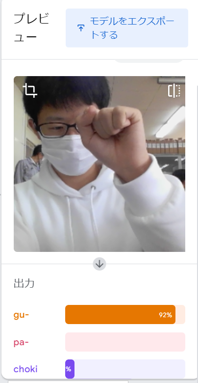
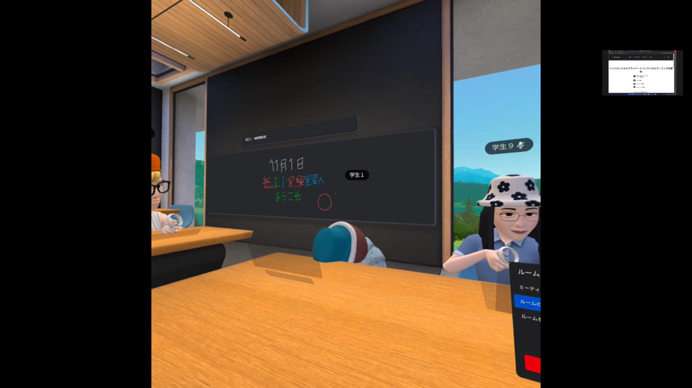

第2週目
2-1 １週目のレポートをHTMLで作る
１週目のレポート
1.内容
Githubリポジトリからrep01.htmlを選択する．そこから内容と感想の記入，スクラッチのサイエンスアートとゲームの画像のUploadなどを行う．
画像のUploadについて，まずAdd fileのUpload filesを選択する．次にchoose your filesをクリックし，art.pngとgame.pngを選択し，Uploadする．commit changeを押して，画像のUpload完了．
内容と感想の記入は，鉛筆ボタンを押して，編集モードにして記入していく．URLのところのyour idの部分を自分のidに書き換える．最後にCommitをクリックする．
2.感想
テキストにある手順にそって作成して，案外簡単に作成することができた．内容と手順を記入するのに，難しい手順はなく，穴埋めするだけで簡単に記入することができた．しかし，間違えてプログラムの部分を1文字でも消して戻れなくなったら，自分で復元するのはできないので，慎重になりながら作業をした．
2-2 機械学習体験

1.内容
Teachable Machineを使って，画像を分類する体験をした．カメラでグー，チョキ，パーの写真をそれぞれ150枚ほど撮り，AIに認識させ，カメラにグー，チョキ，パーのいずれかの手を出すとそれが何なのかリアルタイムで分類されるというものである．
2.感想
手を出す位置によってグーがパーと判定されたり，チョキがグーと判定されたりなど正確ではなかった．また，写っている背景や顔の表情から分類が変わったりしておもしろかった．
2-3 VR（バーチャルリアリティー：Virtual Reality）会議室の体験

1.内容
VRゴーグルをつけて，Wookroomsというアプリケーションでメタバース体験をする．席を移動したり，ホワイトボードを使用したりする．また，ペアの相手の会議室体験の様子をミラーリングPCでキャプチャする．
2.感想
メタバースを使うのは初めてで，操作方法が複雑で難しいものだと思っていたけど，コントローラーを動かしてボタンを押すだけで，扱いやすかったです．会議室体験では，会議室内でほかのユーザと問題なくしっかり会話することができ，楽しかったです．